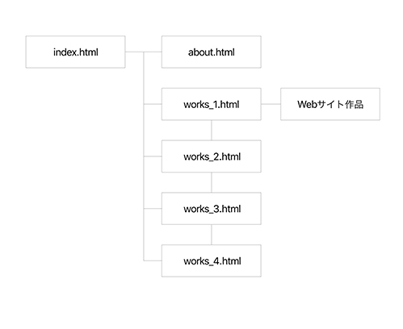

自主制作
ポートフォリオサイト
- カテゴリー
- ウェブサイト（レスポンシブ）
- ターゲット
- 企業の人事ご担当者様
- コンセプト
- 制作物とエンジニア兼デザイナーを目指す自分について紹介する
- 担当範囲
- デザイン、コーディング
- 使用ツール/言語
- Brackets、Gulp、Photoshop、Illustrator、XD/HTML、Sass(SCSS）、jQuery
- 制作時間
- 80時間
作品解説

XDにて構成図、画面イメージ、サイトのロゴを制作。また、Gulpによる開発環境を構築。htmlファイルや画像フォルダを含むプロジェクトフォルダ内のリソース更新時にSassからCSSへのコンパイル、ブラウザ自動リロード、ベンダープレフィックス自動付与を実行するように設定。

サイト名かつドメイン名の一部でもあるGattoneroはイタリア語で黒猫を意味する。自分が好きな猫のように、イタリアでも盛んなクリエイティブをやりたい気持ちに素直になりたいという思いと、「黒」は旧姓に含まれる漢字でもあるので、エンジニアとして歩んできたこれまでの自分も受け入れつつこれからも精進していきたいという想いを込めた。プロフィールを見る
トップページ（index.html）には一部作品のサムネイルを表示し、サムネイルから直接作品ページへ遷移する他、ヘッダのグローバルナビやサムネイル下部のMOREボタンより作品一覧（works.html）へ遷移する構成とした。自己紹介（about.html）も同様。
作品ページを見終わったら前後の作品ページに遷移しやすいようにページャを設置。スクロールトップボタンを追従させ、スマホ表示とタブレット・PC表示でサイズを変更。
一部作品は制作工程を掲載。独学やブラッシュアップの様子が分かるようにした。この作品を見る
制作終盤にファーストビューを作成。エンジニア兼デザイナーとして働くイメージイラストをIllustratorで制作。キャッチコピーを「エンジニア？デザイナー？両方とも、わたしです！」とし、CSSアニメーションでスライドインさせて強調した。